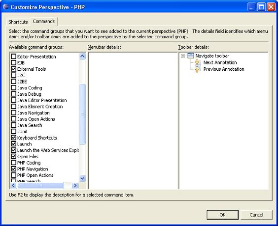

In addition to configuring the layout of your perspective you can also control several other key aspects of a perspective. These include:
The options available on the File > New submenu.
The options available on the Window > Open Perspective submenu.
The options available on the Window > Show View submenu.
Action sets (buttons and menu options) that show up on the toolbar and menu bar.
Switch to the perspective that you want to configure.
Select Window > Customize Perspective. The Customize Perspective dialog will open.
Select the appropriate submenu from the drop down list.
Figure: 1 - Customize Perspective
Select the checkboxes of the elements you want to see on the specific menu in the selected perspective.
Items you do not select will still be accessible by clicking the Other menu option.
Click OK.
Select the Commands tab. The command groups available to the perspective will be displayed.
Select the desired groups and click OK.

Figure: 2 - Command Groups
Select the desired groups and click OK.